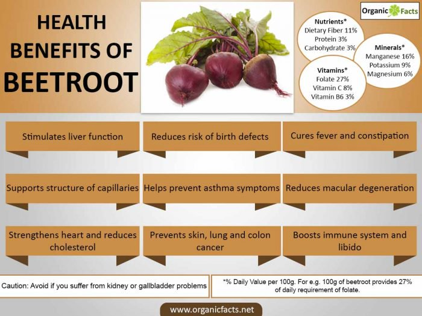

Beets Beautify!
Health Benefits Of Beets
The most powerful health benefits of beets include its ability to lower blood pressure, prevent cancer, cleanse the liver, treat anemia, increase stamina, and boost libido. They also prevent macular degeneration, improve blood circulation, aid in skin care, prevent cataract, build immunity, and treat respiratory problems. These benefits of beetroots can be attributed to their richness in nutrients, vitamins, and minerals.
Eat Your Beet Greens Too
If you simply throw away the green leafy tops to your beets, you're doing yourself a disservice, as these are among the healthiest part of the plant. Besides containing important nutrients like protein, phosphorus, zinc, fiber, vitamin B6, magnesium, potassium, copper, and manganese, beet greens also supply significant amounts of vitamin A, vitamin C, calcium, and iron.
Beet greens actually have even more iron than spinach (another leafy green in the same botanical family) as well as a higher nutritional value overall than the beetroot itself. Research shows beet greens may:
- Help ward off osteoporosis by boosting bone strength
- Fight Alzheimer's disease
- Strengthen your immune system by stimulating the production of antibodies and white blood cells
If you've never tried beet greens before, don't let them intimidate you. They can be added raw to vegetable juice or sautéed lightly right along with other greens like spinach and Swiss chard.
